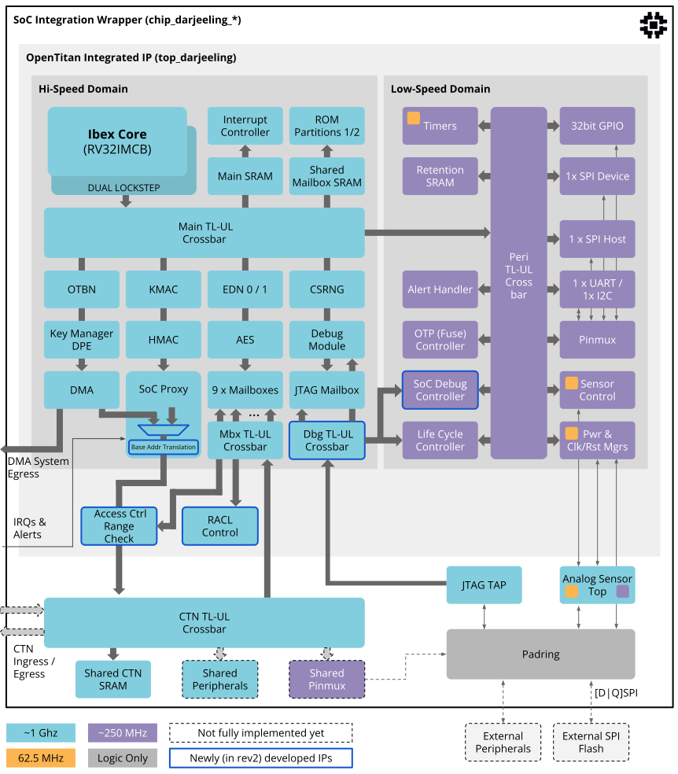
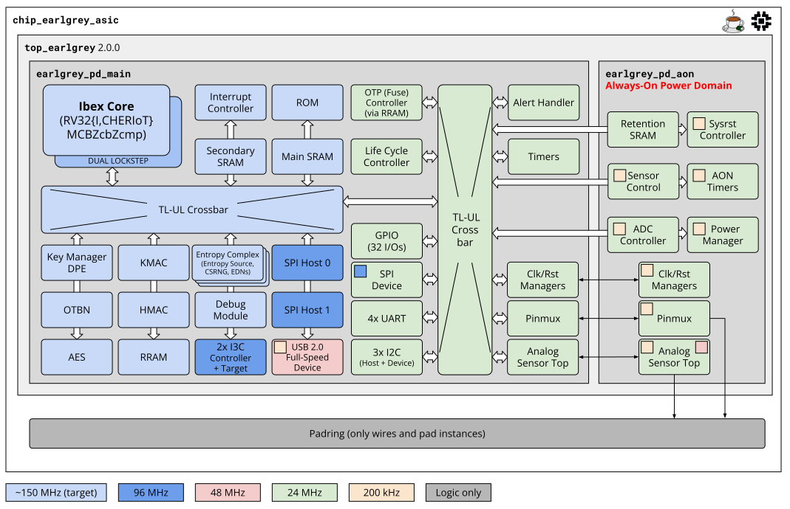
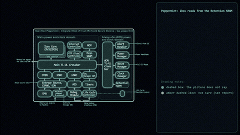
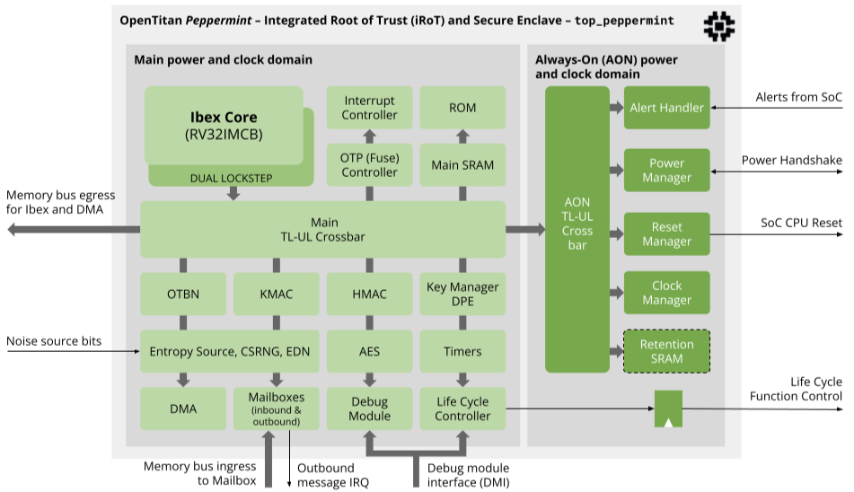
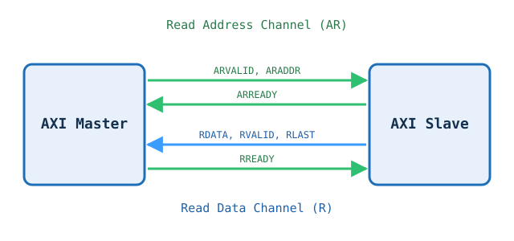

Hardware block diagrams, animated.
IPMotion draws chip and IP-block diagrams in Manim and plays a story over them: a read request travelling through a crossbar, a handshake between master and slave. Describe the story, paste your block diagram, and get a Python script you run on your own machine. Bring your own LLM key. We run nothing.
Open the generatorWhat it can make

Darjeeling
OpenTitan Darjeeling, 49 blocks and 4 regions drawn from the reference picture. Story: Ibex reads from the UART / I2C.
Explore ▸ hover, or tap on a phoneDarjeeling

Prompt
Show Ibex reading from the UART / I2C.
Story
- Idle: nothing is happening yet
- Step 1: Ibex Core sends a read request
- Step 2: Main TL-UL Crossbar passes it to the Low-Speed domain
- Step 3: Peri TL-UL Cross bar sends it to 1 x UART / 1x I2C
- Step 4: 1 x UART / 1x I2C answers
- Step 5: The response travels back over the same links
- Step 6: Ibex Core receives the data. Read complete
Model used
No AI model was used for this animation. The whole diagram is drawn by IPMotion code from the reference picture's own positions (pipeline v4). The story file was written by the IPMotion developers, not generated at run time. Rendered with Manim 0.21.

Earlgrey
OpenTitan Earlgrey, 40 blocks. The same engine on a different chip. Story: Ibex reads from the 4x UART.
Explore ▸ hover, or tap on a phoneEarlgrey

Prompt
Show Ibex reading from the 4x UART.
Story
- Idle: nothing is happening yet
- Step 1: Ibex Core sends a read request
- Step 2: The TL-UL Crossbar passes it to the peripheral side
- Step 3: The peripheral TL-UL Cross bar sends it to the 4x UART
- Step 4: The 4x UART answers
- Step 5: The response travels back over the same links
- Step 6: Ibex Core receives the data. Read complete
Model used
No AI model was used for this animation. The whole diagram is drawn by IPMotion code from the reference picture's own positions (pipeline v4). The story file was written by the IPMotion developers, not generated at run time. Rendered with Manim 0.21.

GIF coming: PeppermintPeppermint
OpenTitan Peppermint, 24 blocks and 9 edge labels across two power domains. A third chip on the same engine. Story: Ibex reads from the Retention SRAM.
Explore ▸ hover, or tap on a phonePeppermint

Prompt
Show Ibex reading from the Retention SRAM in the always-on domain.
Story
- Idle: nothing is happening yet
- Step 1: Ibex Core sends a read request
- Step 2: The Main TL-UL Crossbar passes it to the always-on side
- Step 3: The AON TL-UL Cross bar sends it to the Retention SRAM
- Step 4: The Retention SRAM answers
- Step 5: The response travels back over the same links
- Step 6: Ibex Core receives the data. Read complete
Model used
No AI model was used for this animation. The whole diagram is drawn by IPMotion code from the reference picture's own positions (pipeline v4). The story file was written by the IPMotion developers, not generated at run time. Rendered with Manim 0.21.

AXI read handshake
A small master/slave example: address, data and valid/ready channels, step by step.
Explore ▸ hover, or tap on a phoneAXI read handshake

Prompt
AXI4 read handshake between a master and a slave, cycle by cycle.
Story
- Cycle 1: Master asserts ARVALID=1 & ARADDR=0x1000
- Cycle 2: Slave asserts ARREADY=1. AR Handshake completes.
- Cycle 3: Internal memory read latency. ARVALID deasserted.
- Cycle 4: Slave drives RDATA=0xCAFE, RVALID=1, RLAST=1
- Cycle 5: Master asserts RREADY=1. Read Data Handshake completes!
- Transaction Complete: Read data 0xCAFE received successfully.
Model used
Gold example script from the repo (gold_examples/axi_read_handshake.py), the one the generator is shown as its reference. Not produced by this website's generator. Rendered with Manim 0.21.
Generator
Your script
Local setup
First time? Follow Set up your computer below.
The script imports ipmotion_lib, so run it inside the IPMotion repo:
git clone https://github.com/yashv373/IPMotion cd IPMotion pip install "manim==0.21.0" # save the downloaded file here as script.py, then: manim -pql script.py YourSceneName # optional geometric check: python -m ipmotion.lint script.py
Replace YourSceneName with the class name in the script. No LaTeX needed. Use -qh for a sharper render.
Set up your computer
One-time setup, about 15 minutes. You need Python, FFmpeg (turns frames into a video), Git and Manim. Nothing here needs LaTeX.
- Python 3.10 to 3.12. python.org/downloads. On Windows tick "Add python.exe to PATH" in the installer. Check:
python --version - FFmpeg. ffmpeg.org/download. Easiest: Windows
winget install Gyan.FFmpeg, macOSbrew install ffmpeg, Ubuntusudo apt install ffmpeg. Restart the terminal, then check:ffmpeg -version - Git. git-scm.com/downloads. It is only used to copy the IPMotion repo to your machine.
- Manim Community 0.21.
pip install "manim==0.21.0". Linux also needs the Cairo and Pango system libraries; see the official Manim install guide if the install fails. Check:manim --version - The IPMotion library.
git clone https://github.com/yashv373/IPMotion, thencd IPMotion. The generated script importsipmotion_libfrom this folder, so it must sit inside it.
Run your script
- Save the downloaded file inside the IPMotion folder as
script.py. The scene name is the one afterclassin the script (for exampleAxiReadHandshakeScene). - Render and open it:
manim -pql script.py YourSceneName.-popens the video when done,-qlis fast and low quality. Use-qmor-qhfor sharper output. - The video is saved under
media/videos/script/. For a GIF add--format gif. - Optional check for overlaps and tiny text:
python -m ipmotion.lint script.py.
Stuck? Run the version checks above first. Most failures are FFmpeg or Python missing from PATH.
About
 IPMotion turns a hardware block diagram and a short story into a Manim animation.
Ideated by Yashvardhan Singh | Development by Claude Code. Source: github.com/yashv373/IPMotion.
IPMotion turns a hardware block diagram and a short story into a Manim animation.
Ideated by Yashvardhan Singh | Development by Claude Code. Source: github.com/yashv373/IPMotion.